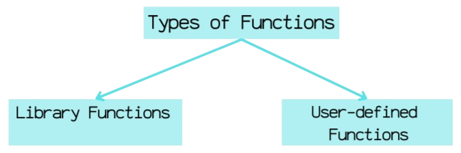

Functions in C
Functions in C are blocks of code that perform a specific task. Instead of writing the same code multiple times, we can create a function and call it whenever needed.
Types of Functions in C

1. Library Functions (Predefined Functions)
These are functions already defined in C's standard library. Examples:
printf() - Prints output to the screen
scanf() - Takes user input
sqrt() - Calculates square root
Example 1:
#include <stdio.h>
#include <math.h> // Required for sqrt()
int main() {
int num = 81;
printf("Square root of %d is %.2f", num, sqrt(num));
return 0;
}
Output:
Square root of 81 is 9.00
User-Defined Functions:
These are functions created by the user for specific tasks.
Types of User-defined
1. Functions with No Arguments & No Return Value
Functions with No Arguments & No Return Value
2. Functions with Arguments but No Return Value
Takes parameters but does not return a value
3. Functions with No Arguments but Returns a Value
Does not take parameters but returns a value
4. Functions with Arguments & Returns a Value
Takes parameters and returns a value
Where Do We Use Functions in Real Life?
Functions are used everywhere in programming, from games to web applications.
Example : Functions in a Video Game
Imagine you’re developing a 2D platformer game where a player controls a character. You need functions for different actions:
🔹moveLeft()→ Move the character left
🔹moveRight()→ Move the character right
🔹moveJump()→ Move the character jump
🔹moveSlide()→ Move the character slide
void moveLeft() {
printf("Character moved left\n");
}
void moveRight() {
printf("Character moved right\n");
}
void jump() {
printf("Character jumped\n");
}
void attack() {
printf("Character attacked\n");
}
int main() {
moveLeft();
moveRight();
jump();
attack();
return 0;
}
Example: Functions in an ATM System
Think about how an ATM machine works. It has different operations that need to be repeated for multiple users.
🔹withdrawMoney() → Handles cash withdrawals
🔹dipositMoney() → Allow deposits
🔹checkBalance() → Displays current account balance
Why Are Functions Important?
Avoid Repetition ✖️ : Instead of writing the same code multiple times, we use functions.
Easy Debugging 🛠️: If something goes wrong, we fix it in one place instead of searching
everywhere.
Better Code Organization 📂: Helps in structuring large projects like games, banking software,
and websites.